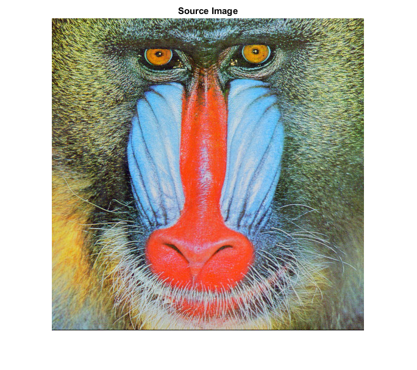
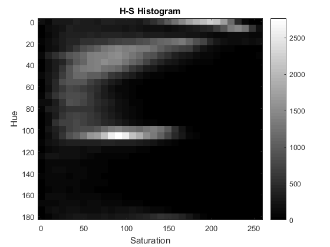
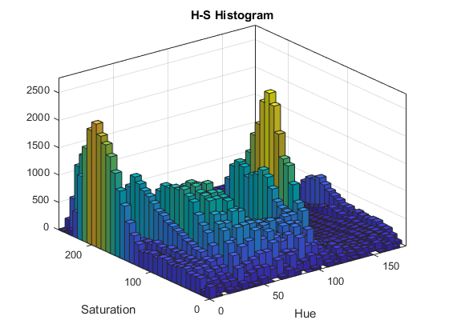
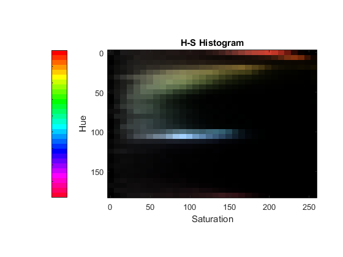

2D Histogram
We previously showed how to calculate and plot one-dimensional histograms. It is called one-dimensional because we are taking only one feature into our consideration, ie grayscale intensity value of the pixel. But in two-dimensional histograms, you consider two features. Normally it is used for finding color histograms where two features are Hue & Saturation values of every pixel.
We explain how to create such a color histogram, which will be useful in understanding further topics like Histogram Back-Projection
Sources:
Contents
Theory
2D Histograms are calculated using the same function, cv.calcHist. For color histograms, we need to convert the image from RGB to HSV. (Remember, for 1D histogram, we converted from RGB to Grayscale). For 2D histograms, its parameters will be modified as follows:
- Channels: first two, because we need to process both H and S plane.
- Bins: 180 for H plane and 256 for S plane.
- Ranges: Hue lies between 0 and 180 & Saturation lies between 0 and 256.
MATLAB also provides functions for computing and plotting 2D histograms, for example histcounts2 and hist3.
The result we get is a two dimensional array of size specified. So we can show them as we do normally, using imshow function. It will be a grayscale image and it won't give much idea what colors are there. We can improve it by showing mapping Hue values of different colors.
Code
load source image (8-bit color)
if true %im = fullfile(mexopencv.root(),'test','test1.png'); im = fullfile(mexopencv.root(),'test','img001.jpg'); elseif ~mexopencv.isOctave() %im = which('greens.jpg'); %im = which('football.jpg'); %im = which('onion.png'); im = which('fabric.png'); end imgRGB = cv.imread(im, 'Color',true); figure, imshow(imgRGB), title('Source Image')
convert from RGB to HSV color space
imgHSV = cv.cvtColor(imgRGB, 'RGB2HSV');calculate 2D histogram of Hue/Saturation (quantize the hue to 30 levels, and the saturation to 32 levels)
histSize = [30, 32]; hlim = [0 180]; % [0,180): hue varies from 0 to 179 slim = [0 256]; % [0,256): sat varies from 0 to 255 hedges = linspace(hlim(1), hlim(2), histSize(1)+1); sedges = linspace(slim(1), slim(2), histSize(2)+1); if true % {imgHSV(:,:,1), imgHSV(:,:,2)} H = cv.calcHist(imgHSV(:,:,[1 2]), {hedges, sedges}); elseif true H = cv.calcHist(imgHSV, {hedges, sedges}, 'Channels',[1 2]-1, ... 'HistSize',histSize, 'Uniform',false); elseif true H = cv.calcHist(imgHSV, {hlim, slim}, 'Channels',[1 2]-1, ... 'HistSize',histSize, 'Uniform',true); elseif ~mexopencv.isOctave() H = histcounts2(imgHSV(:,:,1), imgHSV(:,:,2), hedges, sedges); elseif ~mexopencv.isOctave() [H, hedges, sedges] = histcounts2(imgHSV(:,:,1), imgHSV(:,:,2), ... histSize, 'XBinLimits',hlim, 'YBinLimits',slim); elseif mexopencv.require('stats') H = hist3(reshape(imgHSV(:,:,[1 2]), [], 2), 'Edges',{hedges, sedges}); H = H(1:end-1,1:end-1); elseif mexopencv.require('stats') [H, mid] = hist3(reshape(double(imgHSV(:,:,[1 2])), [], 2), 'Nbins',histSize); H = H(1:end-1,1:end-1); hmid = mid{1}; smid = mid{2}; end
show 2D histogram
figure, imagesc(H, 'XData',slim, 'YData',hlim) colormap('gray'), colorbar title('H-S Histogram'), xlabel('Saturation'), ylabel('Hue')
show histogram as bar plot
if ~mexopencv.isOctave() figure h = histogram2('XBinEdges',hedges, 'YBinEdges',sedges, 'BinCounts',H); set(h, 'FaceColor','flat') %set(h, 'DisplayStyle','tile', 'ShowEmptyBins','on') title('H-S Histogram'), ylabel('Saturation'), xlabel('Hue') end
visualize 2D histogram as an image with colors corresponding to H-S bins
hmid = (hedges(1:end-1) + hedges(2:end)) / 2; smid = (sedges(1:end-1) + sedges(2:end)) / 2; [hh,ss] = ndgrid(hmid./hlim(2), smid./slim(2)); if true vv = cv.normalize(H, ... 'NormType','MinMax', 'Alpha',0, 'Beta',1, 'DType','single'); else vv = H ./ max(H(:)); end % (hh,ss,vv) are in [0,1] range if true histImg = cv.cvtColor(single(cat(3, hh*360, ss, vv)), 'HSV2RGB'); else histImg = hsv2rgb(cat(3, hh, ss, vv)); end
show histogram image with colored bins
figure, imagesc(histImg, 'XData',slim, 'YData',hlim) colormap(hsv(histSize(1))), caxis(hlim), axis image colorbar('YDir','reverse', 'Location','WestOutside', 'YTickLabel',[]) title('H-S Histogram'), xlabel('Saturation'), ylabel('Hue')